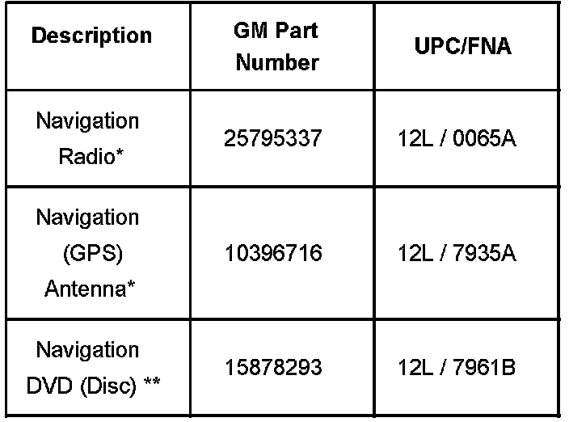

Audio System - Navigation Radio Upgrade
Bulletin No.: 07-08-44-003ADate: March 08, 2007
INFORMATION
Subject:
Upgrade of Non-Navigation Radio to Navigation System
Models:
2007 Cadillac Escalade, Escalade ESV, Escalade EXT
Supercede:
This bulletin is being revised to add an Important statement and correct a part number. Please discard Corporate Bulletin Number 07-08-44-003 (Section 08 - Body & Accessories).
The purpose of this bulletin is to provide information on upgrading a vehicle with a non-navigation radio to a navigation system.
It is important to note that when upgrading a non-navigation radio to a navigation system, the rear vision camera system will be disabled.
The following components are required to upgrade to a Navigation Radio:
These parts are current as of 12/30/2006.

The entire list shown does not reflect or maintain any future supersessions/changes.
Verify all parts before ordering.
Navigation Disc:
Completion of the Navigation Upgrade for the Cadillac Escalade requires purchase of the latest Nav DVD data disc. The dealer will need to make the initial purchase of the Nav DVD disc and enroll that VIN in the GM Nav Disc Update Program (two free annual NAV DVD updates).
**To obtain the latest Nav DVD disc and enroll the VIN for free updates, contact the GM NAV Disc Center at http://www.gmnavdisc.com or call 877-NAV-DISC (877-628-3472). Please have the VIN available to ensure that the latest NAV DVD is being ordered. Tell the agent that you are enrolling a vehicle in the "Escalade One" Program. If the vehicle is a sold unit, please provide the customer information to the agent. If not, providing the VIN is sufficient to register. You will be charged for the first nav disc, either via charge card or via the BARS system. Dealer discretion should be used for cost coverage.
The NAV Disc you receive will contain registration information for the customer. Please place the information into the center console or glovebox of the vehicle.
Radio Upgrade Procedure:
Disconnect the negative battery cable to disable the SIR.
Before servicing any electrical component, the ignition and start switch must be in the OFF or LOCK position and all electrical loads must be OFF, unless instructed otherwise in these procedures. If a tool or equipment could easily come in contact with a live exposed electrical terminal, also disconnect the negative battery cable. Failure to follow these precautions may cause personal injury and/or damage to the vehicle or its components.
Remove the instrument panel (IP) center trim plate.
Remove the floor console bezel.
Remove the IP accessory trim plate.
Remove the radio.
Install a new radio.
Remove the front assist handle.
Remove the windshield pillar garnish molding.
Remove the IP upper trim panel with windshield defroster nozzle grille.
Install the Global Positioning System (GPS) antenna.
Route and connect the harness to the radio.
Install the IP upper trim panel with windshield defroster nozzle grille.
Install the windshield pillar garnish molding.
Install the front assist handle.
Install the IP accessory trim plate.
Install the floor console bezel.
Install the IP center trim plate.
Program and setup the Navigation Radio.
When upgrading NON-Navigation Radio to Navigation, the Rear Vision Camera System is not an available option.

Disclaimer